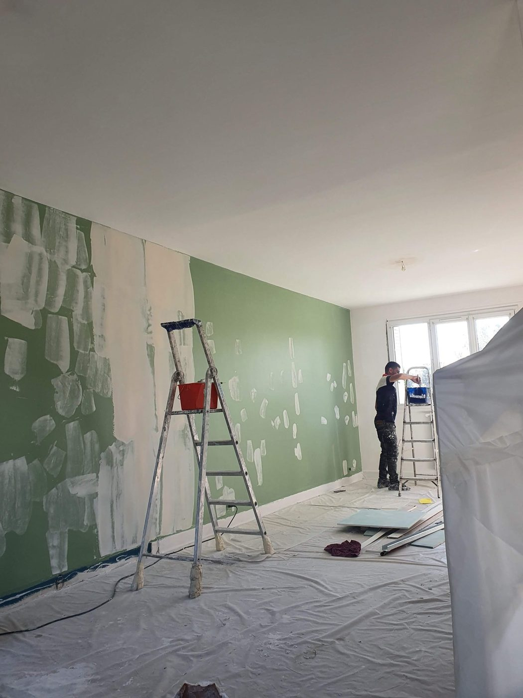

Une entreprise de rénovation intérieure
Atelier à Bry-sur-Marne, siège à Paris. Tous les lots de finition réalisés par la même équipe, sous la même responsabilité.

Pourquoi
Le problème que nous résolvons
Pourquoi nous avons créé cette entreprise
Pour répondre à un problème que rencontrent la plupart des gens qui rénovent : coordonner quatre ou cinq artisans, chacun avec son planning, ses délais et ses excuses.
Chez nous, les lots sont réalisés par la même équipe, sous la même responsabilité. Vous n'avez jamais à arbitrer entre le plaquiste qui accuse le carreleur et le peintre qui attend les deux. Notre garantie décennale couvre l'ensemble de nos travaux de rénovation intérieure.
Notre terrain
Immeubles anciens, Paris
Le bâti ancien parisien
Nous travaillons presque exclusivement sur de l'ancien. Plâtre centenaire, moulures et corniches, murs qui ne sont ni droits ni d'équerre, fissures de retrait, anciennes reprises mal faites. Ce n'est pas une contrainte, c'est notre quotidien, et cela change entièrement la méthode.
Un plafond à moulures ne se traite pas au rouleau. Un mur qui a porté du papier peint pendant trente ans ne se peint pas sans ratissage. Une teinte profonde sur du plâtre ancien demande une impression teintée sous peine de trois couches inutiles.
Nous ne faisons ni plomberie, ni électricité, ni gros œuvre. Sur ces lots, nous nous coordonnons avec vos artisans ou nous vous orientons vers des partenaires que nous connaissons.
Méthode
4 étapes
Notre façon de travailler
Visite technique gratuite
Nous venons sur place, nous relevons les surfaces, nous regardons l'état réel des supports. C'est là que se jouent 80 % de l'écart entre un devis honnête et une mauvaise surprise.
Devis détaillé sous 48 heures
Poste par poste, avec les quantités, les produits et les délais. Pas de forfait opaque.
Chantier protégé
Sols et mobilier bâchés avant le premier coup de pinceau, locaux rangés chaque soir, déchets évacués. En appartement occupé, nous travaillons pièce par pièce pour que vous puissiez rester chez vous.
Réception et levée de réserves
Nous passons avec vous, vous listez ce qui ne va pas, nous le reprenons. Le chantier n'est fini que quand vous le dites.
Engagements
Ce sur quoi vous pouvez nous tenir
Nos engagements
- Un interlocuteur uniqueDu premier appel à la réception. Vous n'avez jamais à arbitrer entre deux corps de métier.
- Un devis sous 48 heuresAprès la visite technique, jours ouvrés.
- Des prix affichésNos fourchettes sont publiques sur chaque page métier. Vous savez avant de nous appeler dans quel ordre de grandeur vous vous situez.
- Un chantier propreProtection des sols et du mobilier, nettoyage quotidien, déchets évacués. Peintures à faible teneur en COV.
- Un échantillon avant applicationSur toute teinte sur mesure ou finition décorative, appliqué sur votre mur et validé avec vous.
- Des délais tenusNous annonçons une durée à la signature et nous vous prévenons dès qu'un imprévu la modifie, pas la veille de la date promise.
- Une entreprise déclaréeSASU au capital de 2 000 €, RCS Paris 101 699 676, TVA FR90101699676. Attestations transmises sur simple demande.
- Garantie décennale sur l'ensemble de nos travauxNos travaux de rénovation intérieure sont couverts par notre garantie décennale. [Assureur, numéro de contrat, attestation téléchargeable.]
L'équipe
Structure resserrée
L'équipe
ASYA DECO est dirigée par Asya Ergisi, présidente. [Une phrase vraie sur son parcours et celui de l'équipe, sans chiffre d'expérience non justifiable.]
C'est une structure volontairement resserrée. Elle nous permet d'avoir toujours quelqu'un de l'entreprise sur le chantier, et de refuser les projets que nous ne pourrions pas mener correctement plutôt que d'empiler les dossiers.


Où nous intervenons
Atelier à Bry-sur-Marne
Où nous intervenons
Notre atelier est au [adresse de l'atelier], 94360 Bry-sur-Marne. Notre siège social est au 142 rue de Clignancourt, 75018 Paris.
Nous intervenons quotidiennement à Bry, Villiers-sur-Marne, Le Perreux, Nogent, Champigny, Joinville-le-Pont, Saint-Maur, Chennevières, Fontenay-sous-Bois, Vincennes, Noisy-le-Grand et Montreuil, ainsi qu'à Paris.
Pour les chantiers d'envergure et les marchés de sous-traitance, nous intervenons sur toute l'Île-de-France.
Passer à l'action
Réponse sous 24 h
Parlons de votre projet
Visite technique gratuite, devis détaillé sous 48 heures, dans l'est parisien et à Paris.